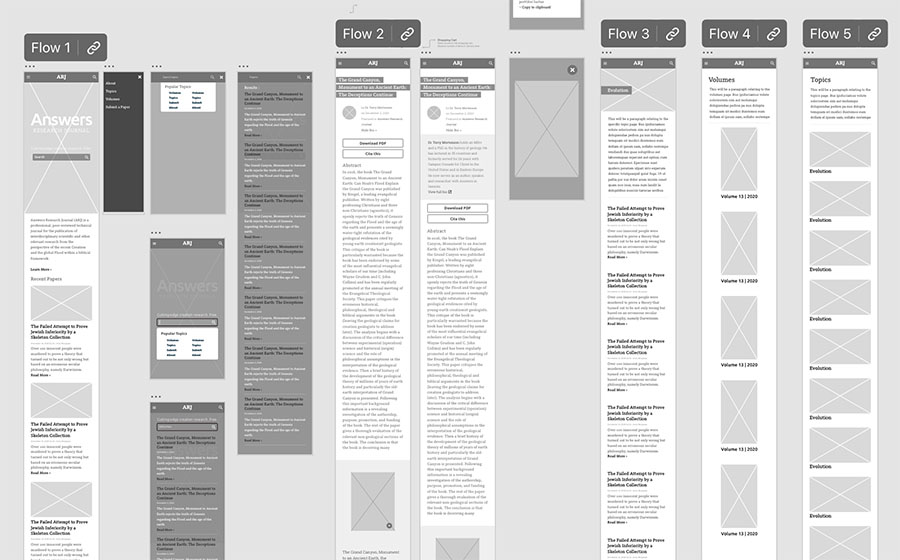
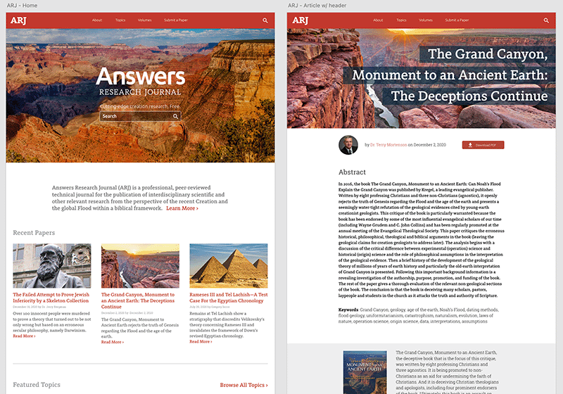
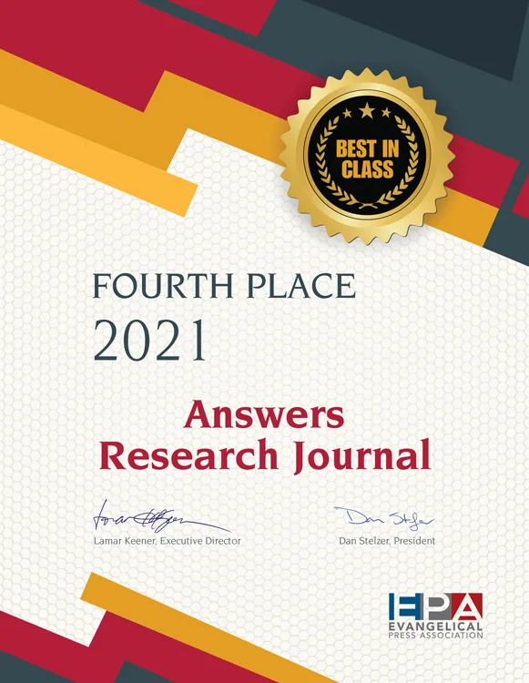

Provide a mobile-friendly scientific resource for educators or science enthusiasts.
Work chevron_right Answers Research Journal

Evangelical Press Award Winner, Answers Research Journal
Answers Research Journal (ARJ) is a peer-reviewed, open-access scientific journal affiliated with Answers in Genesis, focusing on interdisciplinary research from a young-earth creationist perspective.
My Role:
- To design & prototype copy Citation feature.
- To design & prototype Image Expand feature for better viewing.
- To design Volume & Article pages.
Project Goals
Separate lengthy, highly-educated content from main website.
Improve page load by 6 seconds for better SEO.
Wireframes & Site Architecture
Flows for features needing developer assistance are created. The features include copying citations, dynamic biogrpahies, expanding images, and more.
Prototypes
Wireframes were prototyped for internal testing and development team before Answers Research Journal branding was provided to the Web Design team.
Comps & Live Site
Evangelical Press Award
